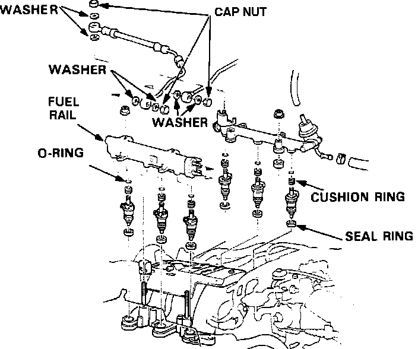

Fuel Rail: Description and Operation
Fuel Manifold Assembly:

The fuel rails supply fuel to the injectors. Each rail is bolted to the intake manifold directly above a row of injectors. The rails are connected by fuel lines. One fuel pressure regulator services both rails. The assembly of fuel rails, fuel lines, and fuel pressure regulator completes the fuel manifold assembly.
In addition to providing the injectors with fuel, the rails are also used to hold each row of injectors in place.